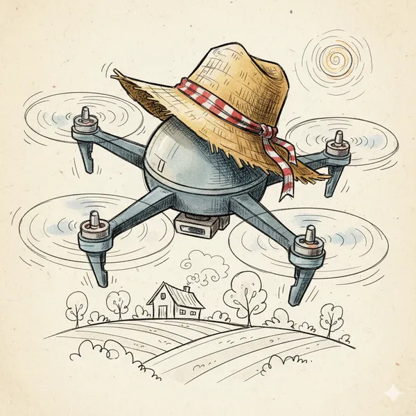
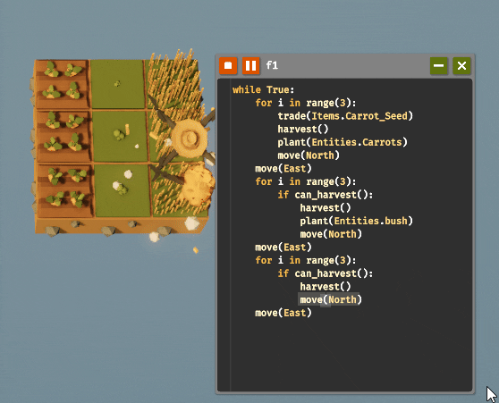

Um jogo interativo perfeito para você aprender Python
Comprar o Jogo
Programação em Python

Gameplay divertida

Raciocinio Lógico

Um jogo interativo perfeito para você aprender Python
Comprar o Jogo
Programação em Python
Gameplay divertida
Raciocinio Lógico
The Farmer Was Replaced (em português, O Fazendeiro foi Substituido) é um jogo indie de simulação onde você controla um drone, o qual você deve dar instruções por meio de um prompt de programação para que ele realize tarefas de agricultura e manutenção de uma fazenda.
O jogo conta com uma Linguagem de programação própria inspirada em python, com funções próprias para ajudar na compreensão e avanço do jogo. O que significa que o jogador consegue aprender a programar em Python enquanto se diverte na jogatina do jogo.
Embora seja um jogo pago, se trata de uma ótima maneira de incentivar e ensinar conceitos como a Lógica da programação, Estruras de repetição, Condicionais, Funções e muito mais. O jogo é recomendado para todas as idades, principalmente para crianças e adolescentes que estão iniciando no mundo da programação ou querem simplesmente treinar suas habilidades.

O funcionamento do jogo é baseado na criação e execução de códigos que controlam diretamente as ações do drone dentro da fazenda. Em vez de realizar cada tarefa manualmente, o jogador pode desenvolver instruções capazes de automatizar atividades, tornando o gerenciamento da fazenda mais eficiente.
Ao iniciar uma tarefa, o jogador utiliza a área de programação para organizar as instruções que serão executadas pelo drone. A partir delas, é possível determinar ações como movimentação pelo terreno, plantio, colheita e interação com diferentes elementos presentes na fazenda.
Conforme o jogador progride, novos recursos e possibilidades são disponibilizados, fazendo com que os códigos precisem se tornar mais elaborados. Para isso, é necessário combinar diferentes estruturas de programação, permitindo criar sistemas capazes de repetir tarefas e tomar decisões de acordo com as condições encontradas durante a execução.
O jogo também incentiva a experimentação, pois o jogador pode executar seus códigos, observar o comportamento do drone e realizar alterações quando necessário. Dessa maneira, conceitos de programação são apresentados de forma prática, fazendo com que a resolução de problemas e a criação de algoritmos estejam diretamente relacionadas ao progresso dentro da fazenda.

O progresso depende da capacidade do jogador de criar soluções para diferentes situações. Isso incentiva o desenvolvimento do raciocínio lógico e a elaboração de algoritmos cada vez mais eficientes.
O jogo apresenta situações em que a repetição de comandos é necessária para automatizar atividades. Dessa forma, o jogador pode compreender na prática a utilização de estruturas de repetição e sua importância na criação de programas.
Ao utilizar a programação como parte fundamental da jogabilidade, o jogo permite que conceitos como lógica, funções, condições e algoritmos sejam aprendidos por meio da experimentação e da resolução de desafios.

The Farmer Was Replaced proporciona um ambiente de experimentação no qual é possível desenvolver habilidades relacionadas ao raciocínio lógico, à resolução de problemas e à organização de algoritmos. Conforme novos desafios são apresentados, o jogador pode aprimorar seus códigos e compreender melhor como diferentes estruturas de programação podem ser utilizadas para automatizar tarefas.
Para educadores, The Farmer Was Replaced pode funcionar como uma ferramenta complementar ao ensino de programação, principalmente na introdução de conceitos como algoritmos, funções, condicionais, variáveis e estruturas de repetição. A utilização de uma atividade prática e interativa pode auxiliar na contextualização desses conteúdos, tornando possível relacionar conceitos teóricos com situações apresentadas dentro do jogo.
Além disso, a ferramenta pode ser utilizada como apoio em atividades que incentivem a experimentação e a resolução de problemas. Dessa forma, o jogo pode complementar métodos tradicionais de ensino e oferecer aos estudantes uma maneira diferente de entrar em contato com a programação, utilizando os desafios da própria experiência para estimular a aprendizagem.